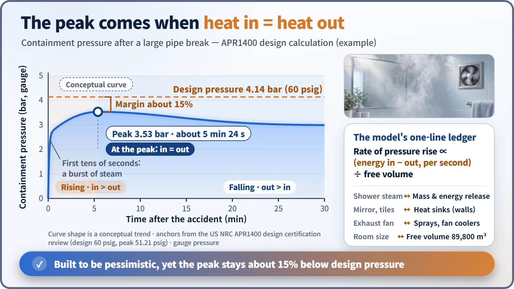
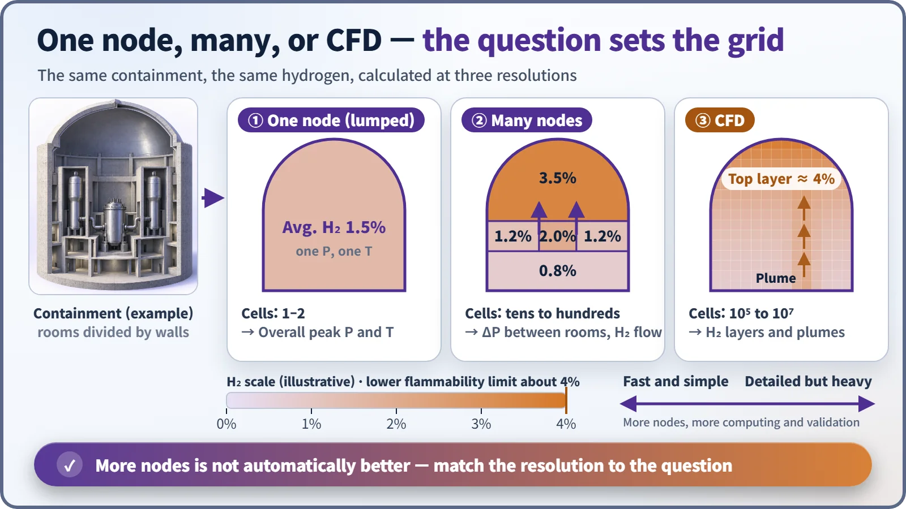

Modeling, Simulation & Computation · 267
Why the Bathroom Mirror Fogs First — How Containment Analysis Models Work
Steam in, heat out, divided by free volume: the bookkeeping that shows a containment stays below its design pressure.
After a pipe break, steam floods the sealed containment and its pressure rises. A containment analysis model takes the mass and energy released, subtracts what walls, sprays and coolers remove, and tracks pressure, temperature and gas concentrations over time to confirm the building stays below its design pressure. [1]
A bathroom after a hot shower
Take a hot shower on a winter morning and the bathroom fills with mist in an order: the ceiling clouds first, droplets bead on the cold mirror, and the exhaust fan slowly clears it. The smaller the bathroom, the faster it fills.
That scene holds the four ingredients of an important nuclear safety calculation: how much hot steam comes in, how big the space is, how much the cold walls soak up, and how much the fan pulls out. The tool that puts numbers on them is the containment analysis model.
The day a pipe breaks
The containment is the huge concrete building that encloses the reactor and its cooling pipes. In a loss-of-coolant accident (LOCA), water at about 300°C and around 150 atmospheres bursts into a space at atmospheric pressure, and much of it flashes into steam in an instant.
Unlike a bathroom, which leaks steam around the door, the containment is sealed on purpose. As steam builds up, pressure and temperature rise. The model's first job is to confirm in advance that the pressure never exceeds the design pressure the building is built to withstand.
Bookkeeping with energy
The model starts from a timetable of when, and how much, water and steam enter the building and how much energy they carry: the mass and energy release, produced separately by a system thermal-hydraulics code for the reactor coolant system. The release is a violent rush in the first few tens of seconds, followed by residual heat trickling in over several minutes. US review guidance requires this release to be calculated conservatively, in the direction that makes peak containment pressure higher. [2]
From there it is close to simple bookkeeping:
Rate of pressure rise ∝ (energy coming in − energy going out) ÷ free volume
The free volume is the empty space left after equipment and walls. Energy leaves through heat sinks (cold concrete walls and steel, where steam condenses like droplets on the mirror), sprays that rain water from the ceiling, and fan coolers that blow air across cold coils; depending on the plant, both are used or only sprays. Because pressure rises while more energy comes in than goes out and falls afterwards, the peak is the instant when energy in exactly equals energy out.

Real numbers from a real design
According to the US Nuclear Regulatory Commission's review of South Korea's APR1400 design, the design pressure is about 4.14 bar above atmospheric (60 psig). Assuming the largest pipe breaks, the calculated peak is about 3.53 bar, reached about 5 minutes 24 seconds after the accident, roughly 15% below design pressure. The free volume is about 89,800 m³. [1]
The calculation is deliberately unfavorable: generous release, little heat soaked up by the walls, and one spray train assumed failed. The number is an upper bound ("even in a bad case, no worse than this"), not a prediction of what would actually happen.
One room or many?
The simplest model treats the whole containment as one node, assuming the inside is well mixed and describing it with single values of pressure and temperature. This lumped-parameter model is enough to check overall peak pressure, and it is fast.
But the building contains rooms separated by walls: steam generator compartments, the pressurizer compartment, the large dome. In the first seconds after a break, pressure in a small room climbs faster than next door, and that difference pushes on the internal walls. Seeing it takes a multi-node model with a compartment for each room and flow through the openings between them. [2]

| Model | Cells | Best for |
|---|---|---|
| One node (lumped) | 1–2 | Overall peak pressure and temperature |
| Many nodes | Tens to hundreds | Pressure differences between rooms, hydrogen moving between rooms |
| CFD | Hundreds of thousands to tens of millions | Hydrogen layers and plumes inside a room |
Hydrogen makes the grid finer
If an accident drags on, hydrogen may be produced, and above about 4% in air it can ignite. Being light, it tends to rise and form layers, like the bathroom fogging from the ceiling down. A one-node model gives only the average, which can hide a dangerous pocket at the top of the dome. So engineers use more compartments, or computational fluid dynamics (CFD), which computes the flow in three dimensions across millions of tiny cells. The price is a far heavier calculation and much more validation against experiments. [3]
Key takeaways
More compartments do not automatically make a better model: a one-node model is the cleaner choice for overall peak pressure, a detailed one for where hydrogen collects. A good containment model balances energy in against energy out at a resolution that fits the question, and design pressure, building size, spray capacity and the placement of hydrogen control equipment all come out of that ledger.